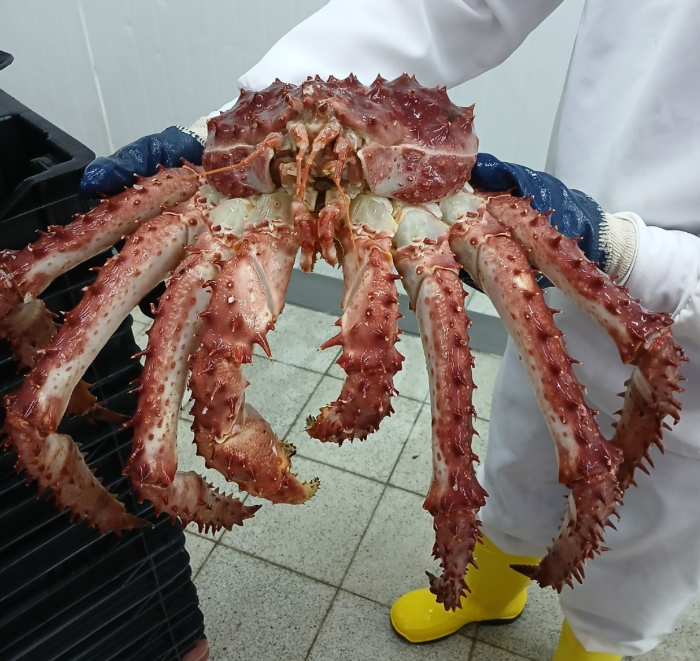
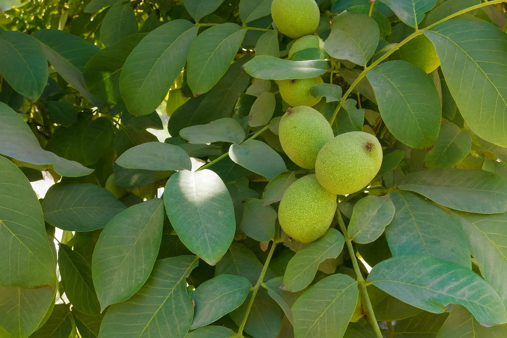
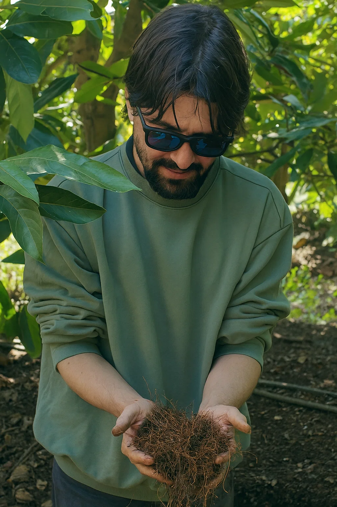
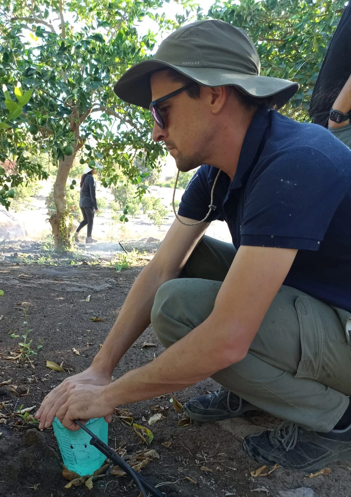
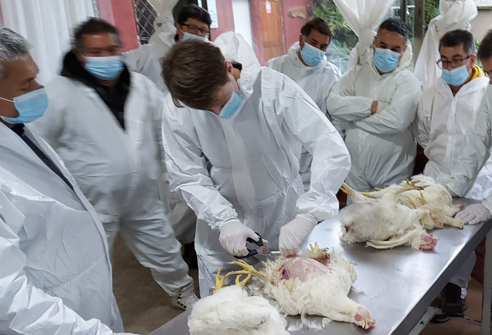
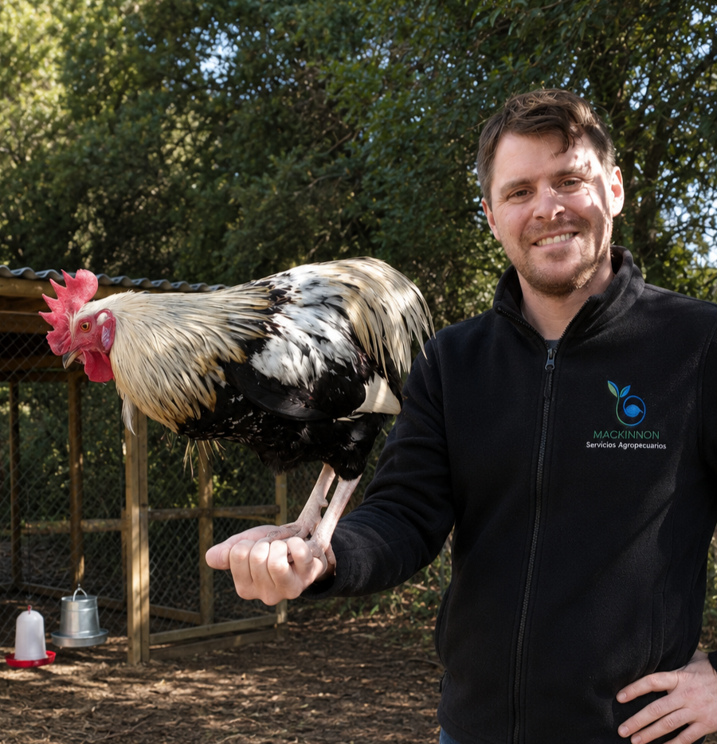
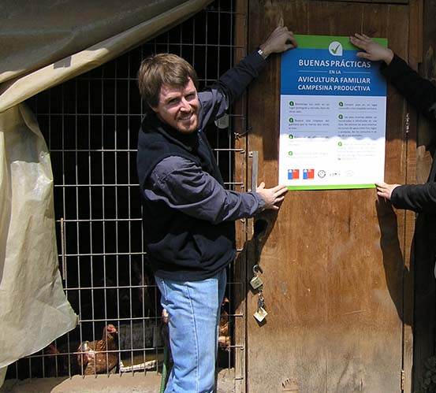
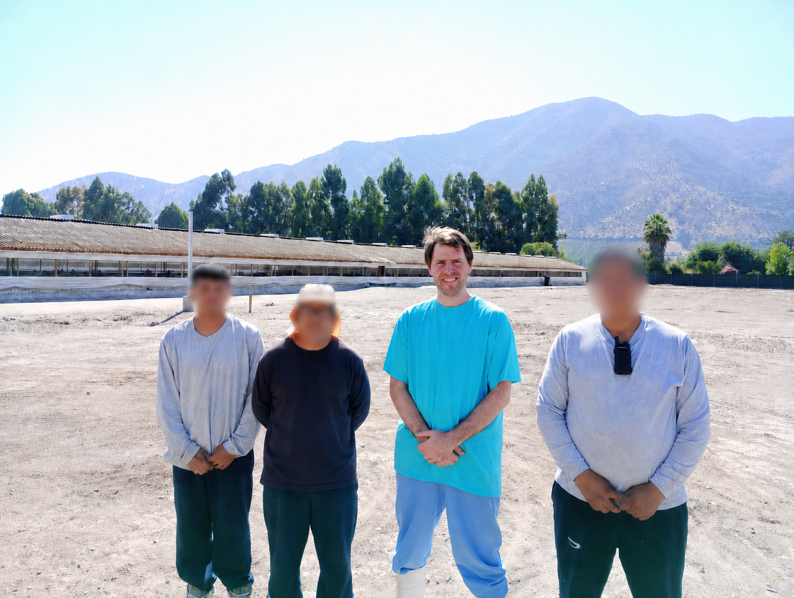

Riego, agricultura de precisión, inocuidad alimentaria y producción pecuaria. Dos especialistas en terreno, con formación de postgrado y resultados comprobados.


Trabajamos directamente con el productor, sin intermediarios. Cada servicio está respaldado por experiencia operativa real y formación de postgrado en su campo.
Diagnóstico, programación y manejo técnico del huerto.
Auditorías, sistemas HACCP y producción avícola.
Cada decisión técnica nace de pasar tiempo en el huerto, la planta o la granja.






El trabajo en terreno se traduce en mejoras concretas: agua, calibre, calidad y certificación.
Los análisis de suelo, la revisión del sistema de riego y el seguimiento mensual hicieron una diferencia enorme. Patrick nos entregó claridad, métricas y un plan de acción que realmente funciona.
Gracias al diagnóstico del sistema de riego y los ajustes recomendados, redujimos costos y estabilizamos la humedad del suelo en rangos óptimos. La fruta ganó calibre y uniformidad.
Escríbenos por WhatsApp o llena el formulario. Respondemos a la brevedad y la primera conversación es sin compromiso.